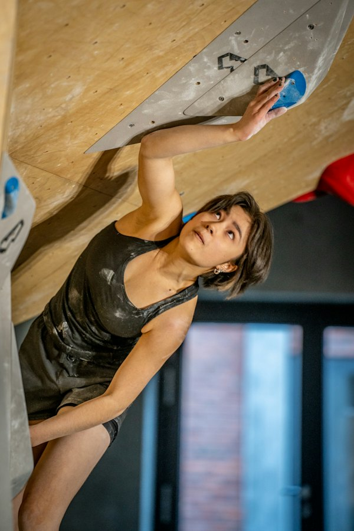

9:41
Log the send
How did it feel?
Helps us pick your next route.
Who filmed you?
Version 7 · photos from Unsplash, videos from Wikimedia Commons and Pexels · gyms, people and numbers are placeholders